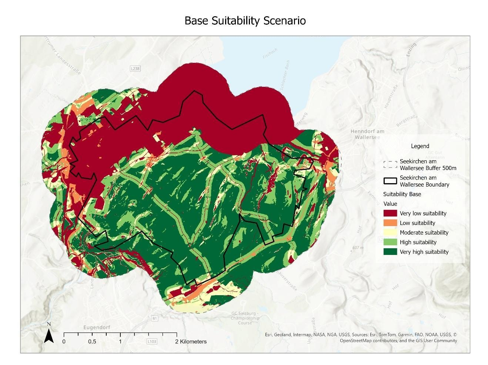
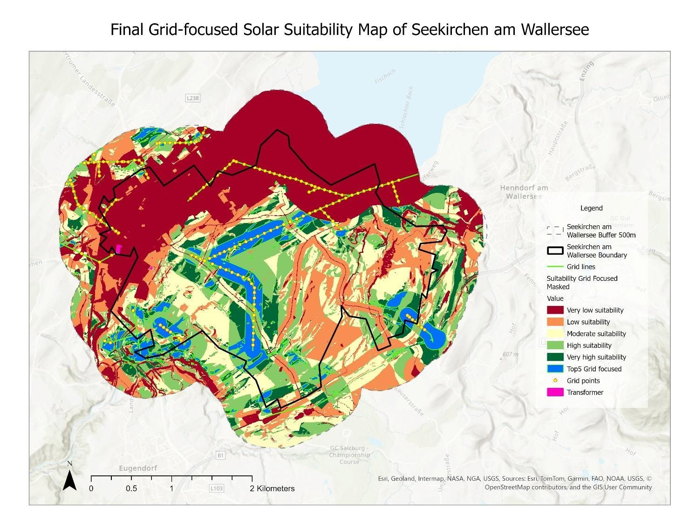
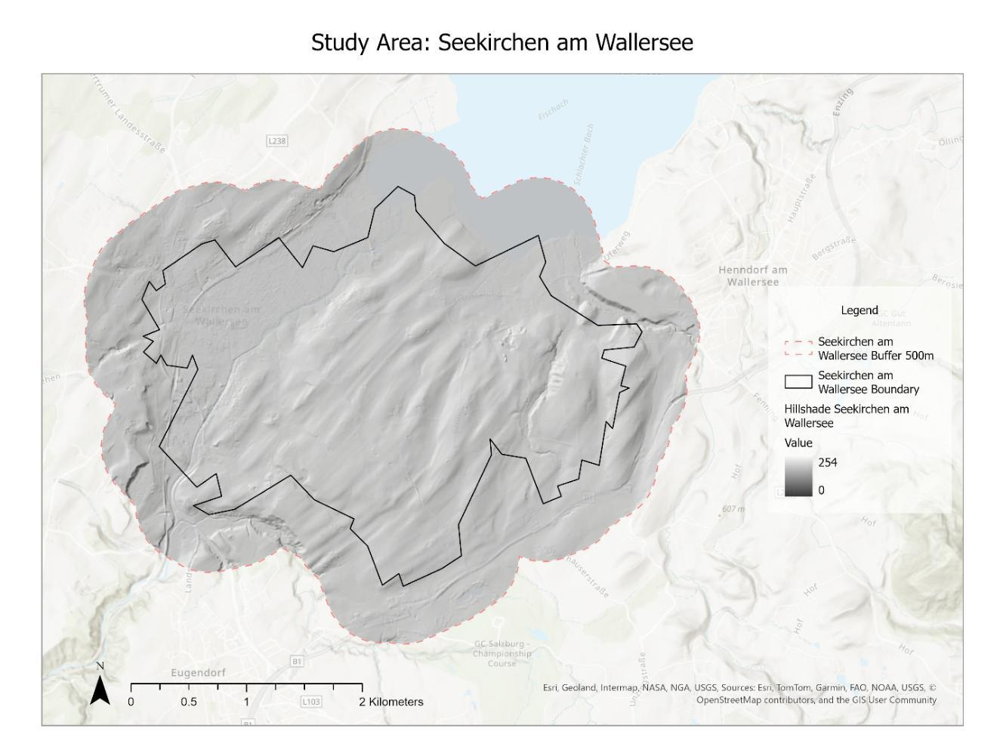
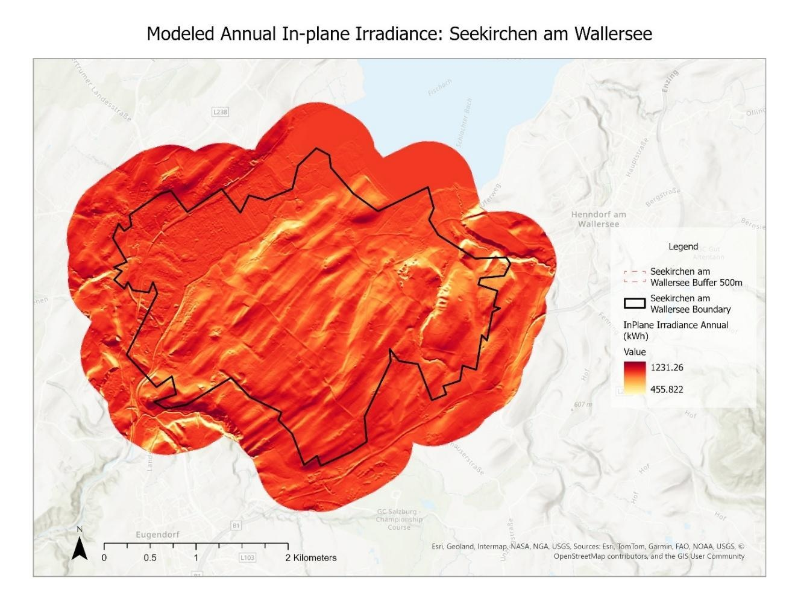
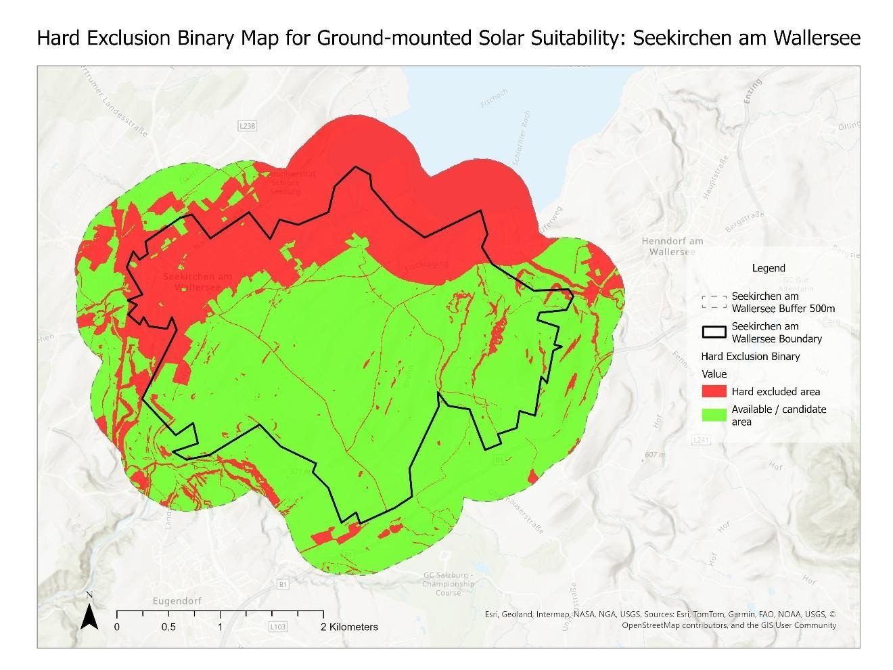
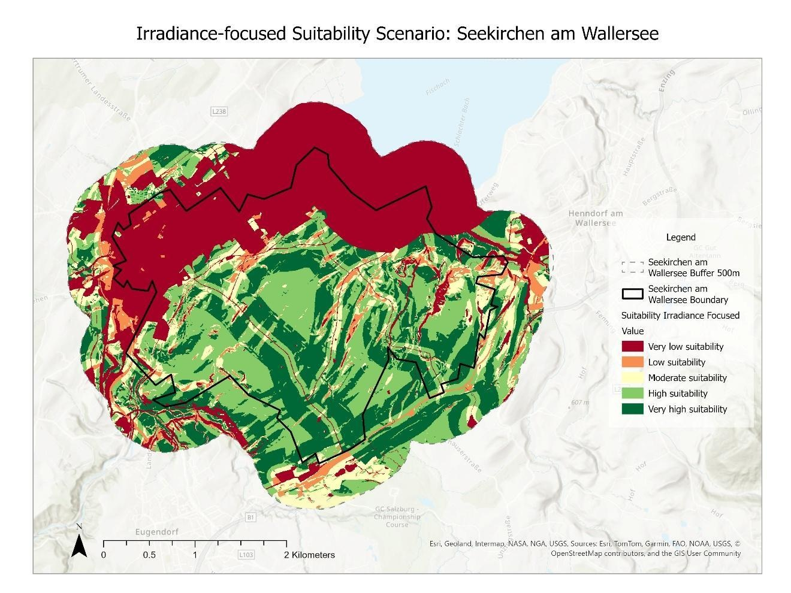
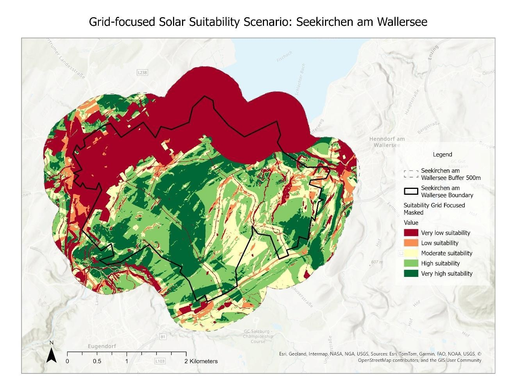
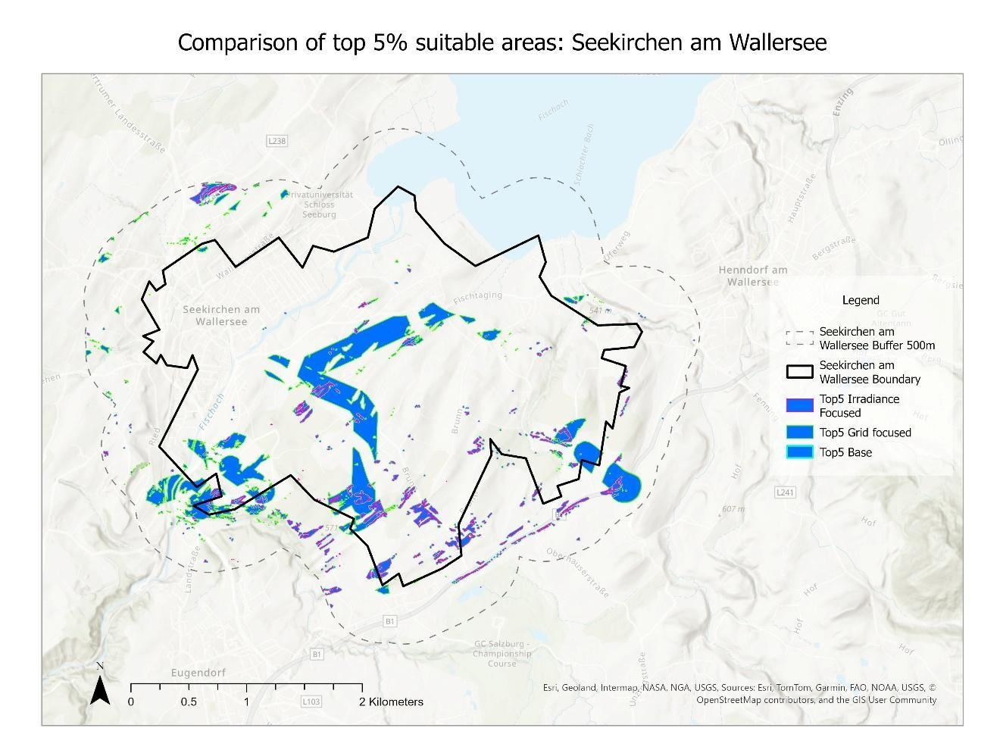

Base scenario
Balances solar radiation, gentle terrain, land use, transport access, and settlement separation.
Top 5% threshold: 0.935

Spatial Analysis · ArcGIS Pro
Seekirchen am Wallersee, Austria
Where could ground-mounted solar fit into the landscape? This GIS suitability analysis combines terrain, sunlight, land use, environmental constraints, and grid proximity to identify promising areas for further investigation.

The question
Solar development needs more than strong sunlight. Gentle terrain, access to infrastructure, and compatible land use must be considered alongside settlements, water, and ecologically sensitive areas. Seekirchen’s mix of agricultural land, settlements, and protected landscapes provides a useful setting for comparing these priorities.

Data & method
Project data to WGS 1984 UTM Zone 33N (EPSG:32633) and clip elevation data to the municipality plus a 500 m buffer.
Derive slope and aspect, then model annual terrain-based in-plane irradiance with ArcGIS Pro Area Solar Radiation for 2020. Modelled values range from about 456 to 1,231 kWh/m²/year.
Combine built-up areas, transport infrastructure, water, protected areas, biotopes, flood zones, landscape protection, and slopes above 15° into a binary exclusion mask.
Standardize the remaining criteria to scores from 0 to 1, combine them using three weighting scenarios, reapply the exclusion mask, and extract each scenario’s highest 5% quantile.


The PVGIS comparison is approximate: it compares coarse satellite-based horizontal irradiance with a detailed terrain-based in-plane model using default atmospheric settings. The mean difference was −110.07 kWh/m²/year; it is not a like-for-like model validation.
Three planning priorities
The base scenario balances five criteria. The irradiance-focused scenario puts more weight on sunlight, while the grid-focused scenario adds proximity to mapped power lines. All scenarios apply the same hard exclusions.
| Criterion | Base | Irradiance | Grid |
|---|---|---|---|
| Annual irradiance | 30% | 45% | 25% |
| Slope | 20% | 20% | 15% |
| Land-use suitability | 20% | 15% | 15% |
| Transport access | 15% | 10% | 10% |
| Settlement distance | 15% | 10% | 10% |
| Grid distance | 0% | 0% | 25% |
Balances solar radiation, gentle terrain, land use, transport access, and settlement separation.
Top 5% threshold: 0.935

Increases the influence of solar radiation to favour areas with stronger modelled energy potential.
Top 5% threshold: 0.905

Rewards proximity to mapped electricity infrastructure alongside physical and land-use suitability.
Top 5% threshold: 0.876

Results & reflection
The top-ranked areas shift between scenarios. Strong sunlight becomes more influential in the irradiance scenario, while locations close to power lines gain importance in the grid scenario. Comparing their top 5% areas makes the sensitivity to planning priorities visible.

Thresholds describe each scenario’s own score distribution. A higher threshold does not mean that scenario is better, and a suitability score is not the probability that a site can be built.
The analysis identifies promising candidate areas, but land ownership, planning permissions, ecological impacts, agricultural value, grid capacity, and stakeholder acceptance need detailed follow-up. A terrain model cannot fully represent shading from buildings and trees, and OpenStreetMap grid proximity does not establish connection availability.